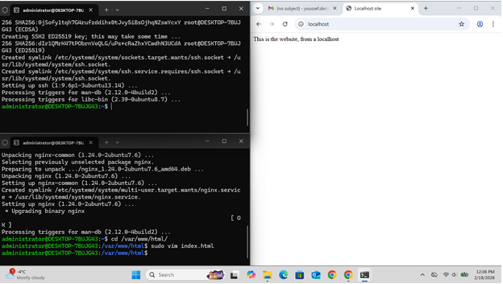
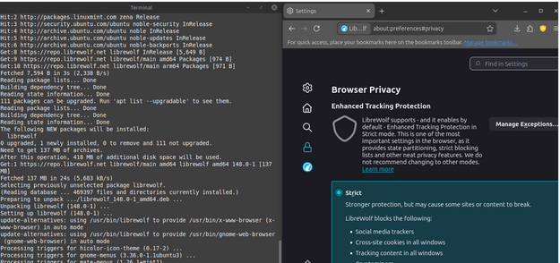

GNU/Linux differences from Windows as Linux by itself is only the kernel, and requires the GNU coreutilities to classify itself as an Operating System. Likewise, GNU/Linux is published under the GNU General Public License as Open Source Software to allow anyone to edit, modify, or redistribute as long as their changes are made public, while Windows is proprietary software and is closed sourced.
Virtualbox is a hypervisor that uses Intel's VT-x and AMD's AMD-V hardware-assisted technologies to natively run guest operating systems. The reason we ran Linux inside of Virtualbox instead of installing it directly is because it would've been time consuming to properly setup a dual boot, not to mention how Windows frequently nukes the EFI partition for Linux during updates, and that it is much easier to deploy to a Virtual Machine and remove the VM then it is on physical hardware.
There was nothing that really surprised me about GNU/Linux. As someone who has done projects such as LFS (Linux From Scratch) and BLFS (Beyond Linux From Scratch), I am familiar with how Linux operates and what utilities are needed for Linux to function. There was nothing confusing or difficult either. It was all straightforward in my opinion.

An image of nginx running and hosting a website

Librewolf, a privacy focused fork of Firefox runing in a Linux Mint VM, freshly installed from the apt package manager